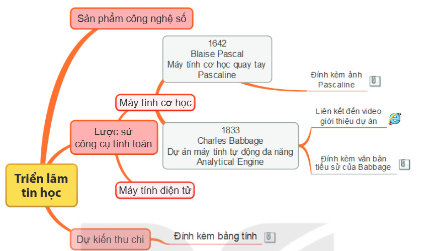

Dành cho giáo viên
Theo dõi lớp
| Học sinh / Nhóm | Đã nộp | Cập nhật |
|---|
Bước 1
1 Khởi động
Khám phá Hình ảnh khởi động
Trò chuyện Cùng An, Minh và Khoa
Đoạn trò chuyện gợi mở (không có trong SGK)
An: Lớp mình sắp tổ chức Triển lãm tin học, nhóm mình làm chủ đề Lược sử công cụ tính toán.
Minh: Nhưng mỗi bạn bận một giờ, khó gặp nhau để làm chung.
Khoa: Mình có thể trao đổi, hợp tác qua mạng: chia sẻ tệp, cùng sửa một bài trình chiếu.
Minh: Nhưng mỗi bạn bận một giờ, khó gặp nhau để làm chung.
Khoa: Mình có thể trao đổi, hợp tác qua mạng: chia sẻ tệp, cùng sửa một bài trình chiếu.
Khởi động Dự án Triển lãm tin học
“Trải qua quá trình học tập môn Tin học, chúng ta đã có những hiểu biết gì và tạo được những sản phẩm nào?” Để tổng kết, các bạn lớp 9A quyết định tổ chức Triển lãm tin học: có nhóm trưng bày sổ lưu niệm của lớp, có nhóm trưng bày bộ sưu tập hình ảnh về CLB Tin học, có nhóm tạo trò chơi bằng ngôn ngữ lập trình trực quan,… Nhóm ba bạn An, Minh, Khoa lựa chọn sản phẩm là bài trình bày về nội dung Lược sử công cụ tính toán. Việc tổ chức một hoạt động như vậy cần làm việc nhóm, cần sự cộng tác của nhiều người.
Ghi bài Khởi động
Sau khi thầy cô chốt, em chép nội dung dưới đây vào vở.
Bước 2 · Hình thành kiến thức mới
2.1 Trình bày thông tin trong trao đổi và hợp tác
Hoạt động 1 Sử dụng sơ đồ tư duy hoặc bài trình chiếu để chia sẻ thông tin
Sơ đồ tư duy và bài trình chiếu là những công cụ giúp trình bày thông tin trong trao đổi và hợp tác. Mỗi bạn tự nghĩ trước, sau đó cả nhóm thống nhất.
Đọc hiểu Các cách sử dụng sơ đồ tư duy, bài trình chiếu
Đọc mục 1 (SGK trang 27–28).
- Trình bày trực tiếp: dễ dàng diễn giải bức tranh toàn cảnh, làm rõ các nội dung chi tiết và trực tiếp trả lời câu hỏi của người nghe.
- Chia sẻ để các thành viên khác xem: khi không có điều kiện trình bày trực tiếp; nên dùng hình ảnh, biểu đồ, video; sơ đồ tư duy nên trình bày trong một trang, có đính kèm tệp để trình bày chi tiết.
- Chia sẻ để các thành viên chủ động cập nhật: mỗi thành viên tự chỉnh sửa theo thời gian phù hợp với mình.
- Chia sẻ để cộng tác theo thời gian thực: tất cả cùng chỉnh sửa trực tuyến; nên mở thêm một kênh hội thoại để trao đổi.
Câu hỏi SGK trang 28
Ghi bài 1. Trình bày thông tin trong trao đổi và hợp tác
Sau khi thầy cô chốt, em chép nội dung dưới đây vào vở.
Bước 2 · Hình thành kiến thức mới
2.2 Khả năng đính kèm tệp văn bản, ảnh, video, trang tính vào sơ đồ tư duy
Đọc hiểu Đính kèm tệp vào sơ đồ tư duy
Đọc mục 2 (SGK trang 28–29). Khi tạo sơ đồ tư duy bằng phần mềm, em có thể đính kèm tệp văn bản, hình ảnh, video và trang tính vào sơ đồ tư duy để minh hoạ chi tiết cho nội dung cần trình bày. Hình 7.1 minh hoạ sơ đồ tư duy mà nhóm An, Minh, Khoa trình bày ý tưởng về nội dung Lược sử công cụ tính toán, trong đó một số nhánh có đính kèm dữ liệu. Thao tác đính kèm dữ liệu được hướng dẫn cụ thể trong Bài 8.

Câu hỏi SGK trang 29
Ghi bài 2. Đính kèm tệp vào sơ đồ tư duy
Sau khi thầy cô chốt, em chép nội dung dưới đây vào vở.
Bước 3
3 Luyện tập
Gắn nhãn Ôn lại kiến thức bằng hình
Luyện tập Bài tập SGK trang 29
Ghi bài Luyện tập
Sau khi thầy cô chốt, em chép nội dung dưới đây vào vở.
Bước 4
4 Vận dụng
Vận dụng Sơ đồ tư duy cho Triển lãm tin học
Em hãy tạo sơ đồ tư duy trình bày nội dung mà em muốn trưng bày trong Triển lãm tin học. Hãy ghi những thông tin dạng văn bản, hình ảnh, video và trang tính cần đính kèm vào sơ đồ tư duy để minh hoạ chi tiết cho nội dung mà em đã chọn. Hãy chia sẻ sơ đồ tư duy với các bạn cùng nhóm theo cách phù hợp với em.
Ghi bài Vận dụng
Sau khi thầy cô chốt, em chép nội dung dưới đây vào vở.